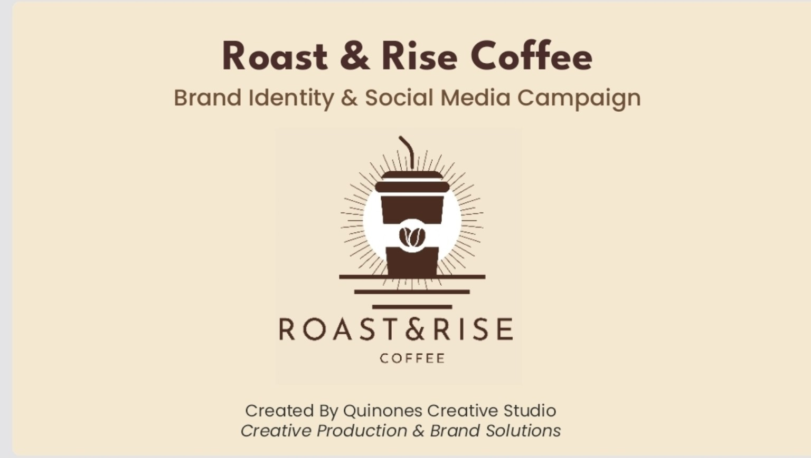
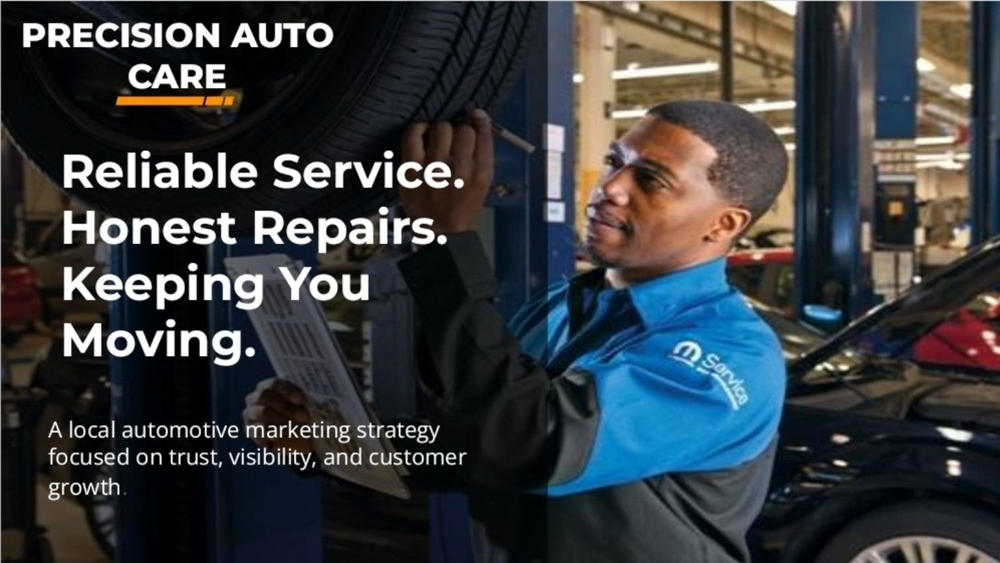
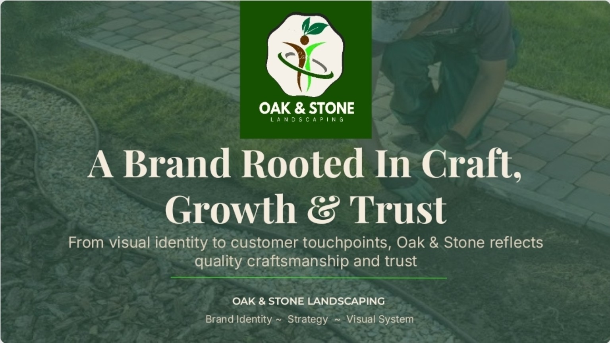
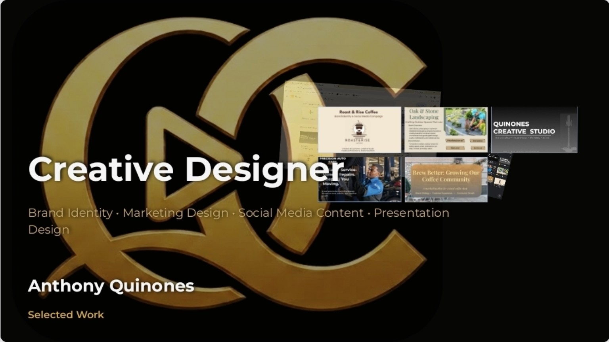

01
Website Design
Simple, professional websites built to help businesses and projects establish a strong online presence.
Quinones Creative Studio
QCS creates clear, polished websites, marketing materials, presentations, and practical AI solutions that help businesses look credible and move forward.
What QCS does
Clear, useful work built around what your business needs now—without unnecessary complexity.
Simple, professional websites built to help businesses and projects establish a strong online presence.
Flyers, presentations, social media graphics, promotional materials, and other content designed to help businesses get noticed.
Practical AI tools and automations that can save time, organize work, generate content, and improve everyday business tasks.
Branding, graphics, presentations, and custom digital designs that give your business or project a consistent professional look.
Clear from the start
No confusing handoffs or unnecessary layers—just a clear path from the first conversation to finished work.
We start with your goals, your customers, and what needs to improve right now.
QCS recommends a focused solution, clear deliverables, and practical next steps.
Your website, marketing materials, or digital tool is built with your feedback along the way.
You receive polished, ready-to-use work and a clear handoff for what comes next.
A focused place to begin
For businesses that need to look more professional online and give customers a clearer reason to reach out.
Portfolio
A growing collection of branding, marketing, presentations, and digital business projects.

A warm, recognizable brand identity and social media campaign created for a local coffee concept.
Flip through the deck with the arrows — tap fullscreen for a closer look.

A trust-focused local marketing concept designed to highlight reliable service and attract nearby drivers.
Flip through the deck with the arrows — tap fullscreen for a closer look.

A polished identity and visual system built around craftsmanship, steady growth, and customer trust.
Flip through the deck with the arrows — tap fullscreen for a closer look.

A curated showcase of brand identities, marketing campaigns, social graphics, and presentation design.
Flip through the deck with the arrows — tap fullscreen for a closer look.
The experimental side of QCS
Explore original apps, community tools, automation systems, and creative experiments as they move from idea to working prototype.
Work with QCS
QCS works with small businesses, local organizations, and independent projects that need practical digital help.
antmik239@gmail.comEmail QCS with a short description of what you need, and we’ll start from there.